01
终局升级区域 · 满级区域
海加尔山
Mount Hyjal
阿克蒙德败亡之后，这片土地满目疮痍，却仍在顽强复苏。玩家需要穿越暗语峡谷，帮助重生的海加尔山开创未来。这里同时是首个团队副本「海加尔峰」的所在地。

二十五年后，我们回到故事开始的地方。 全新四季同启的原初艾泽拉斯，四大区域、1000+ 全新任务、九座地下城与一个全新可选种族—— 这不是又一个赛季，而是一场可以走很多年的旅程。
《魔兽世界：无限》于 2026 年 11 月 4 日 15:00（太平洋标准时间） 全球同步上线， 国服于 11 月 5 日 07:00 开启。Beta 已于 9 月 17 日启动，10 月 6 日开启国服 Beta。 它以 60 级封顶的原初艾泽拉斯为舞台，采用永久在线、可长期扩展的内容结构，而非限时赛季。
新手与回归玩家都能快速进入状态。全新 1–12 级起始区域与引导流程，配合传承系统，让你在第一条路上就握得住职业的招牌技能。
世界本身即是叙事主体。地图边界之外还有地图，海加尔山、辛德拉、河林、泽风岛——每一片土地都有自己的故事线与生态。
升级过程与终局内容同等重要。1–60 级的每一段路都有专属任务密度与区域节奏，不做等级缩放，不做飞行坐骑。
露营系统让野外成为可停留的社交空间；四种规则模式（经典 / PvP / 角色扮演 / 硬核）让不同偏好的玩家在同一服共存。
冒险横跨东部王国与卡利姆多。海加尔山与泽风岛为全新区域，辛德拉揭开地图边界之外的谜团，河林承接 35–45 级的主力升级历程。
阿克蒙德败亡之后，这片土地满目疮痍，却仍在顽强复苏。玩家需要穿越暗语峡谷，帮助重生的海加尔山开创未来。这里同时是首个团队副本「海加尔峰」的所在地。
长期隐藏在莫高雷与凄凉之地之间的谜团终于揭晓。这里牵涉辛德拉、埃雷萨拉斯、厄运之槌，以及当地的半人马部族——多条旧日支线在此交汇重写。
河流、草原与贸易路线交织的荒野边疆。这里有挣扎求生的社区、陈年未解的恩怨，以及超过 150 个全新任务，覆盖 35 至 45 级升级历程中的绝大部分路程。
一处融合经典《魔兽世界》美学与天空之墙建筑风格的空中岛屿。这里是全新可选种族「天裔」的家园，也是所有新角色旅程真正开始的地方。
九处长期被玩家讨论的原初地点，变成了真正可以走进去的地下城。它们覆盖从 13 级到 60 级的完整等级带，与升级路径紧密咬合。
注：达拉然城为 28–33 级内容，与「至暗之夜」中重制的达拉然同址；这是「无限」时间线独立于现代 WoW 的表现之一。
三座团队副本构成「无限」的终局核心。首个团队副本阶段于 2026 年 12 月 10 日解锁，其中 20 人规模的「海加尔峰」将提供新的职业套装与传说级奖励。
满级 10 人挑战。作为「无限」开服后的第一座团队副本，它承担了检验新职业强度、新天赋树与新世界机制在团本环境中的表现这一职责。
20 人规模团队副本，坐落于全新区域海加尔山。它将带来新的职业套装，并提供传说级奖励——这是「无限」开服周期的最终奖励目标。
一座经过重制的经典团队副本。将随 2027 年夏季更新登场，以「无限」时代的语言重新讲述这条巨龙之路。
天裔（Skyborne）是本次「无限」带来的全新可选种族。作为高等精灵流亡者的分支，他们可自由选择加入联盟或部落——这是「无限」在阵营设计上最具象征意义的改动。
来自新近发现的泽风岛，他们在空中岛屿建立了自己的家园。天裔打破了「一个种族绑定一个阵营」的旧例：你可以自由选择效忠联盟还是部落，而两方的种族天赋存在细微差异。他们并非某个新可选种族包的内容——只要拥有《魔兽世界》游戏时间，你就可以在泽风岛开启这段旅程。
以元素之名号令山岩与雷霆。矮人特有的工程审美与萨满祭司的元素亲和在这一组合中产生了全新的表达空间。
被遗忘者以自身的意志重新握住圣光之力——这是一次关于救赎与不死的经典命题，官方将其列为「无限」的职业特色之一。
技能与天赋体系全面重做。官方承诺在弥补现有职业短板的同时，完整保留各职业自身的身份特色。
「无限」继续强调挑战、准备、沟通与协作四件事——高难内容需要的是团队准备度，而非单一职业的数值红利。
「无限」在保留经典框架的前提下，对成长、社交、视觉与辅助功能四条线同时动刀。以下是核心改动项的官方说明与影响评估。
针对 1–60 级旅程新增的进度系统。它把沿途的职业训练固化为可长期积累的传承奖励，让升级本身产生跨角色的价值沉淀。
玩家可以在野外搭建营火，让途经的冒险者驻足停留。借助专业技能为营地提供帮助，并与所有分享营地增益的玩家互相成就——把野外从路过变成停留。
技能与天赋树全面重建。开发方向明确为「补短板而不抹平特色」：每个职业的招牌机制被保留，同时修正其在团本与高难 PvP 中过度弱势或失衡的表现。
玩家可在现代与经典视觉预设之间切换，并独立选择高清或标清角色模型与经典动画。想保留 2004 年的观感，这不再是取舍题。
同一服务器上并存四种规则集：经典、PvP、角色扮演与硬核。不同偏好的玩家在同一个艾泽拉斯里，各自选择自己认可的游戏方式。
官方手柄支持、幻化功能优化、账号范围内的传承奖励，以及全新的营火社交特性，共同构成「无限」的生活质量更新层。
官方明确：不加入飞行坐骑，不做等级缩放。这是「无限」保持「旅程感」的核心前提。
发光条为「无限」，浅色条为 2004 年首发基线。结构相同，但内容厚度已不可同日而语。
「无限」带来一座全新的 15 对 15 战场。它并非单一模式的复制——官方明确说明其融合了战略要地争夺、旗帜占领与防守三种玩法，这在原初时代的战场设计中相当罕见。
控制地图中部的关键点位，形成推进与拉锯的节奏。胜负手在于谁先完成对高价值区域的占领与切换。
经典的夺旗逻辑提供清晰的胜负判定终点。与要地争夺形成「过程与目标」的双层设计，避免战斗只剩一条直线。
防守型目标让先手方无法无脑推进，迫使双方在开局阶段就必须进行战术博弈与资源交换。
后续更新中还将持续追加新的 PvP 内容与赛季调整。
全新战场与四种规则模式中的 PvP 模式形成配套。官方在设计理念中反复强调「守护并培育社交体验」——战场要奖励沟通与协作，而不是惩罚不会配合的人。
本次平衡工作的基调是「补短板、留特色」。以下为官方公布的主要调整方向汇总，完整数值将以 Beta 期间的实测与后续在线修正为准。
| 调整对象 | 类型 | 说明 |
|---|---|---|
| 天赋树 | 重做 | 全职业天赋树重建。天赋选择与职业身份感的关联被重新梳理，不再以「最优解」压缩职业差异。 |
| 技能体系 | 新增增强 | 为各职业加入新技能，并强化部分既有技能。官方表示目标是让每门职业在承担其短板角色时具备可用性。 |
| 弱势职业 | 补强 | 针对在团本与高难 PvP 中表现偏弱的职业进行定向调整，重点覆盖输出爆发窗口与团队功能性。 |
| 职业特色 | 保留 | 调整不触碰职业核心机制。每门职业的招牌定位与战斗节奏被明确要求保留，避免「削平」式平衡。 |
| 新种族天赋 | 新增 | 天裔的种族天赋依阵营而异：部落天裔可用萨满祭司，联盟天裔可用法师，种族天赋存在细微差别。 |
| 新种族职业组合 | 解锁 | 补齐矮人萨满祭司、被遗忘者圣骑士等长期空缺的组合，为职业提供新的种族天赋搭配空间。 |
| 等级缩放 | 不引入 | 官方明确不加入飞行坐骑、不做等级缩放。跨区域内容按原定等级投放，不做动态调节。 |
官方强调：「无限」不是一个赛季，而是一个以玩家反馈为基础、持续扩展原初艾泽拉斯的长期内容计划。以下时间表规划至 2027 年夏季。
Beta 阶段等级上限 30 级，仅向预购「天裔史诗包」与「魔兽永恒合集」的玩家开放。10 月 6 日开启国服 Beta。
国服 Beta 正式开启，为 11 月 5 日的国服上线做最后验证。
11 月 4 日 15:00 PST 全球同步上线（国服 11 月 5 日 07:00）。首批内容包含四大新区域、九座地下城、天裔种族、新种族职业组合，以及重制的技能与天赋体系。
「深穴」（10 人）与「海加尔峰」（20 人）同时解锁，附带新的职业套装与传说级奖励。
「专家模式 / 硬核模式」在冬季开放，为追求高风险永久角色的玩家提供独立的规则集选项。
两座新团队副本、两座新地下城、新任务与新的可玩区域、一条新的传奇任务线，以及 PvP 赛季刷新。
一座经过重制的经典团队副本、一座新团队副本、扩展的世界内容、PvP 赛季再次刷新，以及专业与传承系统的更新。
本体内容随《魔兽世界》订阅或游戏时间免费开放，无需另行购买。以下为可选的升级版本与预购权益。
「无限」不是《魔兽世界 2》，而是在现有引擎与二十五年积累之上，为经典时代玩家建立的永久栖身之所。它与「至暗之夜」所处的世界魂三部曲并行——两条时间线，同一个世界。